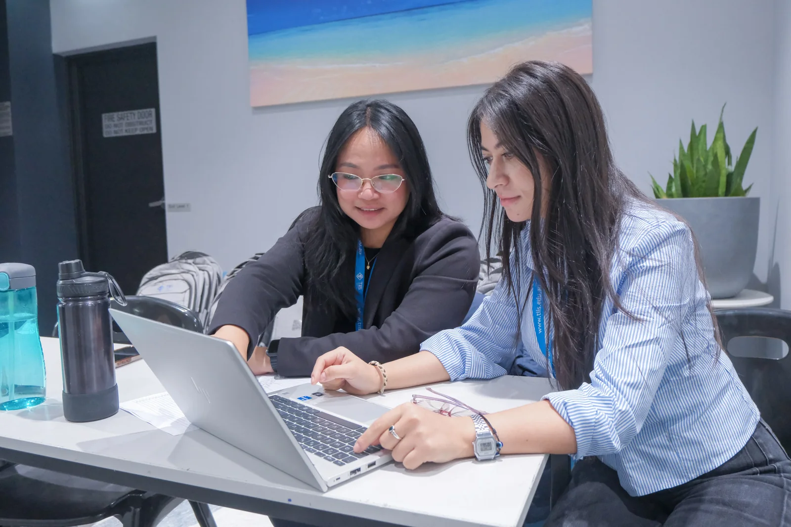

AQF Level 9
Sydney & Melbourne
CRICOS 107617M
Master of Business Administration
A 16-subject MBA with online and on-campus study: ten core subjects, a capstone and a five-subject specialisation or General MBA route.
A 16-subject MBA with online and on-campus study: ten core subjects, a capstone and a five-subject specialisation or General MBA route.
The restructured 2026 MBA develops senior management capability, strategic leadership and applied professional judgement. Combine ten core subjects and a Business Capstone with Accounting, Marketing & Entrepreneurship, Cyber Security, or a cross-disciplinary General MBA. Online and on-campus students follow equivalent curricula and assessment standards.

Published intake examples: Block 1 — February; Block 3 — June; Block 5 — October. The brochure labels six intakes but lists only these three. Confirm the complete intake calendar and your start date with admissions.
Choose one study route below. Core alternatives replace a subject; they do not add subjects to the 16-subject total.
| Code | Subject and study requirements |
|---|---|
| MBA601 or MPA501 | Accounting for Managers or Accounting Principles (Accounting stream) |
| MBA602 | Marketing Management |
| MBA603 | Management, Leadership and Ethics |
| MBA604 or MPA506 | Business Information Systems or Accounting Information Systems (Accounting stream) |
| MBA607 | Strategic Business Management Prerequisite: MBA603 |
| MBA608 | Innovation and Entrepreneurship |
| MPA502 | Business and Company Law |
| MPA503 | Economics for Business |
| MPA504 | Business Finance |
| MPA508 | Business Statistics and Research |
Accounting students take MPA501 in place of MBA601 and MPA506 in place of MBA604. Confirm your study plan before enrolment.
| Code | Subject and study requirements |
|---|---|
| MBA609 | Business Capstone Project Prerequisites: MPA508 and MBA603 |
Take a defined specialisation or build a General MBA across approved electives. Subject availability and prerequisites apply.
| Code | Subject and study requirements |
|---|---|
| MPA505 | Corporate Accounting |
| MPA507 | Management Accounting |
| MPA509 | Contemporary Accounting Theory: Research and Practice |
| MPA510 | Auditing and Assurance Services |
| MPA511 | Taxation Law |
Designed to align with CPA Australia, CA ANZ and ACCA pathway requirements. Confirm current recognition with the relevant body before enrolment; completion does not itself confer professional membership.
| Code | Subject and study requirements |
|---|---|
| MBA610 | Digital Marketing Prerequisite: MBA602 |
| MBA611 | International Marketing Management Prerequisite: MBA602 |
| MBA612 | Enterprise Design and Value Creation Prerequisite: MBA608 |
| MBA6XX | New Product Development Under curriculum development — final code and availability to be confirmed |
| MBA6XX | Small Business Entrepreneurship Under curriculum development — final code and availability to be confirmed |
MBA6XX is the brochure’s placeholder, not a final subject code. Ask admissions to confirm delivery of the full five-subject route before enrolling.
| Code | Subject and study requirements |
|---|---|
| MCS502 | Introduction to Cyber and Network Security |
| MCS601 | Cyber Security Risk Management, Governance and Regulation |
| MCS602 | Human Factors in Cyber Security |
| MCS604 | Cyber Security Incident Management Prerequisite: MCS601 |
| MCS611 | Digital Forensics Prerequisites: IT foundation subjects, MCS601 and MCS604. Confirm the required foundation subjects and any recognition of prior study with the coordinator. |
This route draws subjects from the TIIS MCS. The brochure describes MCS ACS accreditation as being pursued, not granted.
Select five electives across the specialisations, subject to prerequisites. The additional general electives listed in the brochure are shown below. These are options, not another compulsory five subjects.
| Code | Subject and study requirements |
|---|---|
| MBA605 | Human Resource Management |
| MBA606 | Business Intelligence and Data Analytics |
| MBA613 | Global Business Management |
| MBA614 | International HR and Workforce Management |
| MBA615 | International Business Strategy |
Emerging Industry Needs: the brochure reserves a fourth, undefined specialisation. No subject list is published for it; it is not presented here as an available enrolment route.
The nested AQF Level 8 award comprises MBA601, MBA602, MBA603 and MPA503: four subjects, 24 credits.
Satisfactory completion and a satisfactory GPA provide direct articulation with full credit into the MBA. Ask admissions for the required GPA.
With four subjects credited, complete six further core subjects, the capstone and five route subjects. Accounting applicants should confirm treatment of the MPA501 substitution.
Confirm the GCBA timetable with admissions: the brochure describes its duration as “1 block (approximately 6 months)” but defines a teaching block as 6–7 weeks elsewhere. This pathway does not promise a one-block completion date.
Source: TIIS MBA/GCBA Brochure 2026 v2, supplied September 2026. Updated 22 September 2026. This revised structure supersedes the earlier 13-core-plus-3-elective outline on these MBA pages.
Online study combines synchronous classes with asynchronous learning through Moodle. Access lecture recordings, discussion forums and digital resources around scheduled classes and assessment deadlines. The online and on-campus modes use equivalent curricula, assessments, learning outcomes and academic support.
Allow seven hours of self-directed study per subject each week, plus ten hours for each final assessment task. On-campus classes are offered in Sydney and Melbourne; the Sydney campus is at 13–15 Smail Street, Ultimo NSW 2007.
The brochure lists a two-year full-time award alongside six annual blocks and two subjects per block. Confirm your individual sequence, breaks and completion date with admissions; the block figures are not an accelerated completion guarantee. International students must meet their visa conditions for study load and delivery mode.
A bachelor degree at AQF Level 7 or higher from a recognised provider, or an equivalent overseas qualification.
Applicants without a bachelor degree who have at least five years of substantial relevant management or professional experience may be considered under the Student Selection and Admissions Policy. Admission is assessed, not automatic.
IELTS 6.5 overall with no band below 6.0, or a recognised equivalent.
The brochure also accepts a bachelor degree taught entirely in English and completed within the past two years, or more than five consecutive years residing or working in an English-speaking country. Admissions will verify your evidence.
Bachelor-qualified applicants seeking preparation, or who do not meet the MBA direct entry standard, may be considered for the nested GCBA. Satisfactory completion and GPA allow direct progression.
Confirm eligibility, current fees, intake dates and any funding arrangements with admissions. No fixed tuition price or FEE-HELP entitlement is stated in the supplied brochure.
Indicative pathways include senior management, consulting, entrepreneurship, marketing leadership, finance leadership and cyber security management. Outcomes depend on experience, specialisation and any professional requirements.
Lead teams and departments in organisations of all sizes.
Advise organisations on strategic growth and transformation.
Apply MBA expertise to consulting and advisory roles globally.
Launch and grow your own business with MBA-level acumen.